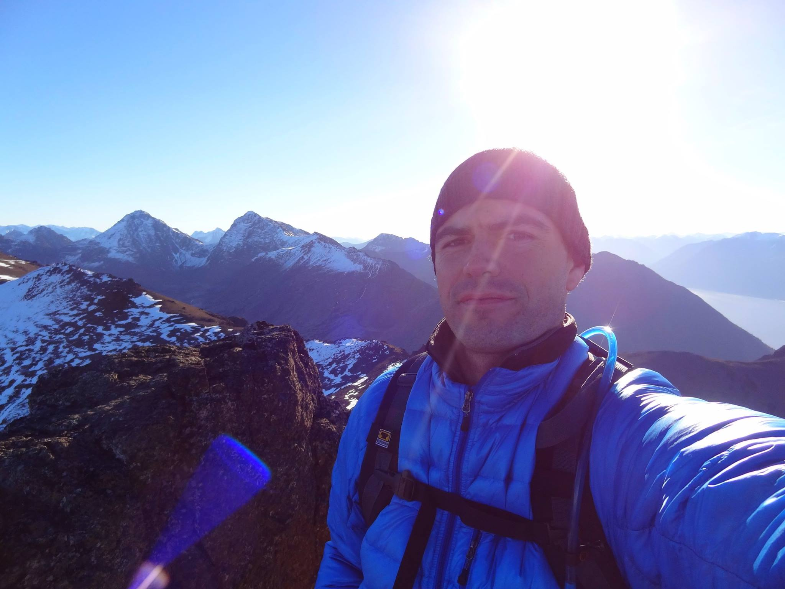

UNH
I am currently a senior at UNH Manchester majoring in Business Administration with a focus in marketing. I went to Manchester Community College for two year before transferring to UNH in the Spring of 2017.
My name is Tim and I love to photograph moose. I was born and raised in New Hampshire and currently reside in Manchester. My senior year in high school I became very fascinated with moose and started driving north to the White Mountains to try and catch a glimpse of one. At the time I was not very well-educated on moose behavior so I wasn't very successful at seeing them early on. However with some research and trial and error I learned tricks to seeing moose and getting interesting photographs.
My first love is hiking which led me to moose. I have two older brother, Joey and Brian. Joey, the oldest, got me into hiking when I was in high school. He took me to climb Mount Chocorua and Mount Moosilaukee and taught me a lot about hiking and the outdoors. As I began to get into hiking more, my brother Brian and his then girlfriend Amy started to join me. I have been fortunate to undertake major hikes with my brothers in New Hampshire, Maine, and Alaska.

I am currently a senior at UNH Manchester majoring in Business Administration with a focus in marketing. I went to Manchester Community College for two year before transferring to UNH in the Spring of 2017.
For the past two years I have been working in marketing, specializing in social media. I have represented Stark Brewing Company, The Stocked Fridge, and UNH Manchester. Recently I decided to start my own social media marketing firm. Know anyone who might be in need of social media marketing for their business? Let me know!